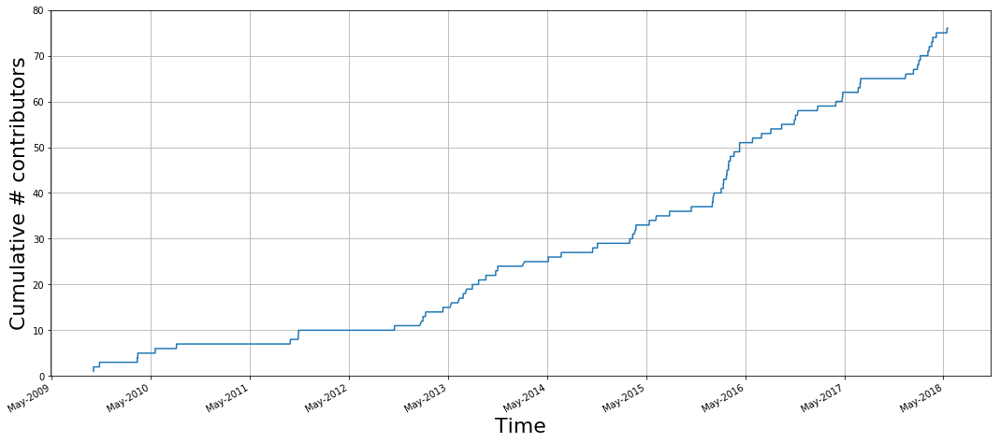
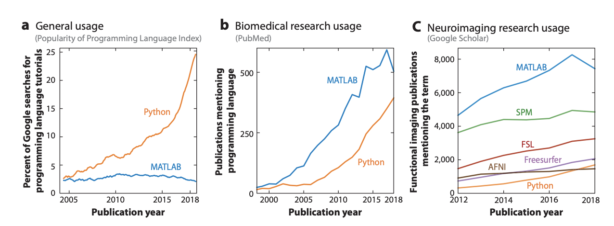

Understanding the brain with open data and open source software
Ariel Rokem, University of Washington eScience Institute
Slides available at:


Data science education
Development of tools and practices for reproducible research
Building a data science community: open, rigorous and ethical
Data-driven research
Data-driven discovery
 By Donald Pelletier
[
By Donald Pelletier
[ By
By {kind=link}
{kind=link}
The paradigms of scientific discovery
1. Empirical (experimental)
2. Theoretical (mathematical)
3. Simulation (computational)
4. Data-driven scientific discovery

Jim Gray

Data-driven discovery is affecting all fields!
Normal behavior is supported by brain networks

Studying brain networks

Not just static cables!
Brain connections develop and mature with age
Individual differences account for differences in behaviour
Adapt and change with learning
The era of "brain observatories"
Allen Institute for Brain Science
Human Connectome Project (HCP),
(2012-2015), N = ~1,200
Healthy Brain Network (HBN),
(2016--), N = ~10,000
Adolescent Brain Cognitive Development,
(2016--), N = ~10,000
UK Biobank,
(2018--), N = ~500,000
Opportunities
New data sets will enable important new discoveries
Data-driven discovery
Challenges
Data arriving at unprecedented volume, variety and velocity
=> Need new tools and approaches to process, analyze and interpret
=> New sociotechnical structures sustain data science approaches
Open source software is a necessary complement to brain observatories
Open-source software for science


Python: an ecosystem for scientific computing
Free and open source
High-level interpreted language
Python in Astronomy (ADS)


Studying brain networks
Diffusion MRI
Diffusion statistics


Amyotrophic Lateral Sclerosis (ALS)

Community-developed open-source software
Open to users

Open to contributors
Distributed collaboration

Do neuroscientists use Python?
How can we get more people involved?
Methods in data science are rapidly changing
Learning often requires substantial hands-on experience
Hack weeks
Week-long events
Combination of learning and project work
A fine balance of pedagogy and hacking


Contact information